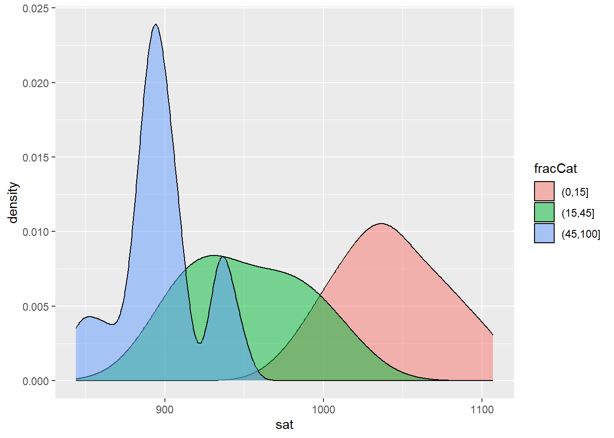
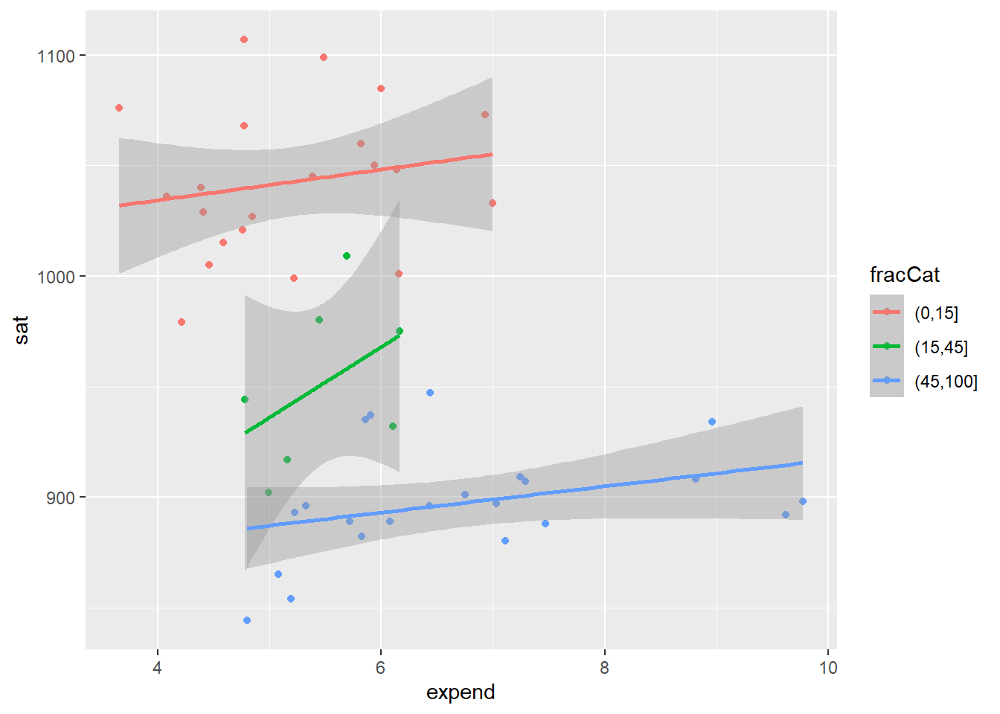

Exam one covered setup, univariate, bivariate, multivariate, spatial, appropriate, and effective visualizations.
Set Up & Background
Use R studio to utilize R code to help explore data. You can use the console for quick tests and trying out code. A quart document is good for saving information and compiling code segments.
Use a hash tag to leave comments inside of a code chunk.
Follow style guides for consistent and easy to understand code.
Make sure data is tidy
row = unit of observation
column = measure of variable
each entry should be one data value
Why Visualizations Matter
Visualizations help to understand data and its characteristics, inform next steps, and to help communicate about findings. It can help to explore trends, relationships and their strength, find outliers, and more.
The Basics of Visualizations
A graphic contains:
a frame/coordinate system
a layer (a single geometric element)
scales
(optional) faceting
theme
Exploring Relationships
Response Variables - the variable whose variability we would like to explain
Predictors - variables that might explain variability in the response variable
Qualitative versus quantitative variables will need to be visualized differently.
Effective Visualization
Professional
axis labels, figure caption with source
Accessible
alt text, color blind friendly color palette
Smart Design Details
consider making comparisons, faceting, etc
Ethics - Do not mislead
Visability
Privacy
Power
Pluralism
Emotion & Embodiment
Context
Overview of Code
Below is a list of important coding functions. See later sections to view them in action!
nrow() & ncol()
number of rows and columns (respectively)
str()
structure of the data
head()
variables at beginning of a dataset. Defaults to 6, can add comma and number to specify
tail()
variables at end of a dataset. Defaults to 6, can add comma and number to specify
dim()
dimensions of a dataset
class()
Returns class of a variable
summarize()
Allows for a number of summarizing methods such as median, mean, min, max, etc
arrange()
Orders the data according to a specific variable
group_by()
Groups the data into categories
ggplot(dataset, aes(x = n, y = n)) +
the framework for our plot using a dataset and setting the x and y parameters. used prior to implementing the geom_ functions
geom_point()
Makes a scatterplot of points
geom_smooth(method = “lm”)
Makes a line plot. lm means linear model.
geom_jitter(width = 0.5, size = 1)
Helpful for when points overlap, this is a scatterplot method which will randomly jitter the points according to the width and size variables inputted.
geom_histogram()
A type of bar plot. Can use bins to create categories
geom_bar()
A bar plot
geom_density(alpha = 0.5)
Creates a density plot. Modifying the alpha value allows for varying transparency
geom_boxplot()
Creates a plot of boxplots
geom_violin()
Creates a violin plot
geom_line()
creates a line connecting given data points
labs(title = “title”, x = “x”, y = “y”, color = “color”)
Creates labels
theme_
Opens up a list of theme options
scale_fill_manual()
Manually set the colors for the plot
facet_wrap(~ value)
Creates facet wrap where each category has their own mini plot
mutate(new_column = existing_column*2)
modifies the data to create a new column
rename (new_name = old_name)
renames previous data/variables
distinct(column_name)
checks if it is a distinct value
count(column_name)
Finds how many items there are
Scale editing:
Color - changes color to represent a different variable
Shape - Changes shape to represent variable
Fill - changes fill to represent a variable
Cut - cut(variable, x) splits variable into groups with unique colors
Spatial Visualization
Confounding variables - omitted or lurking variables that must be controlled
hikes |>mutate(timeForSlowHike = time*2) |>#modifies the data to create a new columnrename (timeForNormalHike = time) |>#renames previous data/variablesarrange(rating) # Orders the data according to a specific variable
avgHikePeak <- hikes |>#create new data set for average hike time for given peakgroup_by(peak) |>#Groups the data into categoriessummarize(mean(time)) #Allows for a number of summarizing methods such as median, mean, min, max, etc
Making Plots:
ggplot(hikes, aes(x = rating)) +geom_bar(color ="orange", fill ="blue") +labs(x ="Rating", y ="Number of hikes") +theme_minimal()
ggplot(hikes, aes(x = elevation)) +geom_histogram(color ="white") +labs(x ="Elevation (feet)", y ="Number of hikes")
`stat_bin()` using `bins = 30`. Pick better value with `binwidth`.
# switched the binwidth to 1000, which means it categorizes the data into 1000 value rangesggplot(hikes, aes(x = elevation)) +geom_histogram(color ="white", binwidth =1000) +labs(x ="Elevation (feet)", y ="Number of hikes")
ggplot(hikes, aes(x = elevation)) +geom_density(color ="blue", fill ="orange")
ggplot(elections, aes(x = historical, fill = winner_20)) +geom_bar()
ggplot(elections, aes(x = historical, fill = winner_20)) +geom_bar(position ="dodge")
ggplot(elections, aes(x = historical, fill = winner_20)) +geom_bar(position ="fill")
Multivariate Practice
education <-read.csv("https://mac-stat.github.io/data/sat.csv")ggplot(education, aes(y = sat, x = salary, color = expend)) +geom_point() +geom_smooth(method ="lm")
`geom_smooth()` using formula = 'y ~ x'
Warning: The following aesthetics were dropped during statistical transformation:
colour.
ℹ This can happen when ggplot fails to infer the correct grouping structure in
the data.
ℹ Did you forget to specify a `group` aesthetic or to convert a numerical
variable into a factor?
ggplot(education, aes(x = sat, fill = fracCat)) +geom_density(alpha =0.5)

ggplot(education, aes(x = expend, y = sat, color = fracCat)) +geom_point() +geom_smooth(method ="lm")
`geom_smooth()` using formula = 'y ~ x'

Spatial Practice
library(gplots)
Warning: package 'gplots' was built under R version 4.4.2
Attaching package: 'gplots'
The following object is masked from 'package:stats':
lowess
library(mosaic)
Warning: package 'mosaic' was built under R version 4.4.2
Registered S3 method overwritten by 'mosaic':
method from
fortify.SpatialPolygonsDataFrame ggplot2
The 'mosaic' package masks several functions from core packages in order to add
additional features. The original behavior of these functions should not be affected by this.
Attaching package: 'mosaic'
The following object is masked from 'package:Matrix':
mean
The following objects are masked from 'package:dplyr':
count, do, tally
The following object is masked from 'package:purrr':
cross
The following object is masked from 'package:ggplot2':
stat
The following objects are masked from 'package:stats':
binom.test, cor, cor.test, cov, fivenum, IQR, median, prop.test,
quantile, sd, t.test, var
The following objects are masked from 'package:base':
max, mean, min, prod, range, sample, sum
library(sf)
Warning: package 'sf' was built under R version 4.4.2
Linking to GEOS 3.13.0, GDAL 3.10.1, PROJ 9.5.1; sf_use_s2() is TRUE
library(maps)
Warning: package 'maps' was built under R version 4.4.2
Attaching package: 'maps'
The following object is masked from 'package:purrr':
map
library(leaflet)
Warning: package 'leaflet' was built under R version 4.4.2
A figure of hiking trail elevation in the Adirondack Mountains of New York - Made by Julia Prewitt
A figure of Percent of Republican Support by County in 2020 by State Historical Trends - Made by Julia Prewitt
Source Code
---title: "Visualization"format: html---# Exam 1 Summary {.unnumbered}Exam one covered setup, univariate, bivariate, multivariate, spatial, appropriate, and effective visualizations.# Set Up & Background {.unnumbered}Use R studio to utilize R code to help explore data.You can use the console for quick tests and trying out code.A quart document is good for saving information and compiling code segments.Use a hash tag to leave comments inside of a code chunk.Follow style guides for consistent and easy to understand code.Make sure data is tidy- row = unit of observation- column = measure of variable- each entry should be one data value# Why Visualizations Matter {.unnumbered}Visualizations help to understand data and its characteristics, inform next steps, and to help communicate about findings.It can help to explore trends, relationships and their strength, find outliers, and more.# The Basics of Visualizations {.unnumbered}A graphic contains:- a frame/coordinate system- a layer (a single geometric element)- scales- (optional) faceting- theme# Exploring Relationships {.unnumbered}Response Variables - the variable whose variability we would like to explainPredictors - variables that might explain variability in the response variableQualitative versus quantitative variables will need to be visualized differently.# Effective Visualization {.unnumbered}- Professional - axis labels, figure caption with source- Accessible - alt text, color blind friendly color palette- Smart Design Details - consider making comparisons, faceting, etc- Ethics - Do not mislead - Visability - Privacy - Power - Pluralism - Emotion & Embodiment - Context# Overview of Code {.unnumbered}Below is a list of important coding functions.See later sections to view them in action!- nrow() & ncol() - number of rows and columns (respectively)- str() - structure of the data- head() - variables at beginning of a dataset. Defaults to 6, can add comma and number to specify- tail() - variables at end of a dataset. Defaults to 6, can add comma and number to specify- dim() - dimensions of a dataset- class() - Returns class of a variable- summarize() - Allows for a number of summarizing methods such as median, mean, min, max, etc- arrange() - Orders the data according to a specific variable- group_by() - Groups the data into categories- ggplot(dataset, aes(x = n, y = n)) + - the framework for our plot using a dataset and setting the x and y parameters. used prior to implementing the geom\_ functions- geom_point() - Makes a scatterplot of points- geom_smooth(method = "lm") - Makes a line plot. lm means linear model.- geom_jitter(width = 0.5, size = 1) - Helpful for when points overlap, this is a scatterplot method which will randomly jitter the points according to the width and size variables inputted.- geom_histogram() - A type of bar plot. Can use bins to create categories- geom_bar() - A bar plot- geom_density(alpha = 0.5) - Creates a density plot. Modifying the alpha value allows for varying transparency- geom_boxplot() - Creates a plot of boxplots- geom_violin() - Creates a violin plot- geom_line() - creates a line connecting given data points- labs(title = "title", x = "x", y = "y", color = "color") - Creates labels- theme_ - Opens up a list of theme options- scale_fill_manual() - Manually set the colors for the plot- facet_wrap(\~ value) - Creates facet wrap where each category has their own mini plot- mutate(new_column = existing_column\*2) - modifies the data to create a new column- rename (new_name = old_name) - renames previous data/variables- distinct(column_name) - checks if it is a distinct value- count(column_name) - Finds how many items there are- Scale editing: - Color - changes color to represent a different variable - Shape - Changes shape to represent variable - Fill - changes fill to represent a variable - Cut - cut(variable, x) splits variable into groups with unique colors# Spatial Visualization {.unnumbered}Confounding variables - omitted or lurking variables that must be controlledTypes of spatial visualizations:- Point map - Plots locations of individual observations- contour map - Plots density and distribution of observations- Choropleth Map - plots outcomes in different regionsSpatial maps are static or dynamic/interactive.# Making Plots {.unnumbered}## Univariate Practice {.unnumbered}Loading in the Data:```{r}#| eval: true# Import datahikes <-read.csv("https://mac-stat.github.io/data/high_peaks.csv")##load tidyverselibrary(tidyverse)```Examining the Data:```{r}#| eval: truehead(hikes)tail(hikes)dim(hikes)str(hikes)nrow(hikes)ncol(hikes)class(hikes)```Sorting and Cleaning Data:```{r}hikes |>mutate(timeForSlowHike = time*2) |>#modifies the data to create a new columnrename (timeForNormalHike = time) |>#renames previous data/variablesarrange(rating) # Orders the data according to a specific variableavgHikePeak <- hikes |>#create new data set for average hike time for given peakgroup_by(peak) |>#Groups the data into categoriessummarize(mean(time)) #Allows for a number of summarizing methods such as median, mean, min, max, etc```Making Plots:```{r}ggplot(hikes, aes(x = rating)) +geom_bar(color ="orange", fill ="blue") +labs(x ="Rating", y ="Number of hikes") +theme_minimal()ggplot(hikes, aes(x = elevation)) +geom_histogram(color ="white") +labs(x ="Elevation (feet)", y ="Number of hikes")# switched the binwidth to 1000, which means it categorizes the data into 1000 value rangesggplot(hikes, aes(x = elevation)) +geom_histogram(color ="white", binwidth =1000) +labs(x ="Elevation (feet)", y ="Number of hikes")ggplot(hikes, aes(x = elevation)) +geom_density(color ="blue", fill ="orange")```## Bivariate Practice {.unnumbered}```{r}# Load dataelections <-read.csv("https://mac-stat.github.io/data/election_2020_county.csv")ggplot(elections, aes(x = repub_pct_16, y = repub_pct_20)) +geom_point()ggplot(elections, aes(y = repub_pct_20, x = repub_pct_16)) +geom_point(color ="red", fill ="black")ggplot(elections, aes(y = repub_pct_20, x = repub_pct_16)) +geom_text(aes(label = state_abbr))ggplot(elections, aes(y = repub_pct_20, x = repub_pct_16)) +geom_point() +geom_smooth(method ="lm")ggplot(elections, aes(y = repub_pct_20, x = historical)) +geom_violin()ggplot(elections, aes(y = repub_pct_20, x = historical)) +geom_boxplot()ggplot(elections, aes(x = repub_pct_20, fill = historical)) +geom_density(alpha = .5) +scale_fill_manual(values =c("blue", "purple", "red"))ggplot(elections, aes(x = repub_pct_20, fill = historical)) +geom_density() +scale_fill_manual(values =c("blue", "purple", "red")) +facet_wrap(~ historical)ggplot(elections, aes(x = historical, fill = winner_20)) +geom_bar()ggplot(elections, aes(x = historical, fill = winner_20)) +geom_bar(position ="dodge")ggplot(elections, aes(x = historical, fill = winner_20)) +geom_bar(position ="fill")```## Multivariate Practice {.unnumbered}```{r}education <-read.csv("https://mac-stat.github.io/data/sat.csv")ggplot(education, aes(y = sat, x = salary, color = expend)) +geom_point() +geom_smooth(method ="lm")ggplot(education, aes(x = sat, fill = fracCat)) +geom_density(alpha =0.5)ggplot(education, aes(x = expend, y = sat, color = fracCat)) +geom_point() +geom_smooth(method ="lm")```## Spatial Practice {.unnumbered}```{r}library(gplots)library(mosaic)library(sf)library(maps)library(leaflet)fave_places <-read.csv("https://hash-mac.github.io/stat112site-s25/data/our_fave_places.csv")leaflet(data = fave_places) |>addTiles() |>addMarkers()leaflet(data = fave_places) |>addTiles() |>addCircles(color =col2hex("red"))leaflet(data = fave_places) |>addProviderTiles("USGS") |>addCircles(weight =10, opacity =1, color =col2hex("yellow")) |>addPolylines(lng =~longitude,lat =~latitude,color =col2hex("green") )``````{r}library(rnaturalearth)starbucks <-read.csv("https://mac-stat.github.io/data/starbucks.csv")starbucks_mn <- starbucks |>filter(Country =="US", State.Province =="MN")world_boundaries <-ne_countries(returnclass ="sf")ggplot(world_boundaries) +geom_sf() +geom_point(data = starbucks,aes(x = Longitude, y = Latitude),alpha =0.3, size =0.2, color ="darkgreen" ) +theme_map()starbucks_cma <- starbucks |>filter(Country %in%c('CA', 'MX', 'US'))cma_boundaries <-ne_states(country =c("canada", "mexico", "united states of america"),returnclass ="sf")ggplot(cma_boundaries) +geom_sf() +geom_point(data = starbucks_cma,aes(x = Longitude, y = Latitude),alpha =0.3,size =0.2,color ="darkgreen" ) +coord_sf(xlim =c(-179.14, -50)) +theme_map()starbucks_midwest <- starbucks |>filter(State.Province %in%c("MN", "ND", "SD", "WI"))midwest_boundaries <-st_as_sf( maps::map("county",region =c("minnesota", "wisconsin", "north dakota", "south dakota"), fill =TRUE, plot =FALSE))ggplot(midwest_boundaries) +geom_sf() +geom_point(data = starbucks_midwest,aes(x = Longitude, y = Latitude),alpha =0.7,size =0.2,color ='darkgreen' ) +theme_map()ggplot(cma_boundaries) +geom_sf() +geom_density_2d(data = starbucks_cma,aes(x = Longitude, y = Latitude),size =0.2,color ="darkgreen" ) +coord_sf(xlim =c(-179.14, -50), ylim =c(14.54, 83.11)) +theme_map()``````{r}library(RColorBrewer)library(socviz)data(county_map) elections_by_state <-read.csv("https://mac-stat.github.io/data/election_2020_by_state.csv")elections_by_counties <-read.csv("https://mac-stat.github.io/data/election_2020_county.csv")states_map <-map_data("state")elections_by_state <- elections_by_state |>filter(state_abbr !="DC") |>select(state_name, state_abbr, repub_pct_20) |>mutate(repub_20_categories =cut(repub_pct_20, breaks =seq(30, 70, by =5), labels =c("30-34", "35-39", "40-44", "45-49","50-54", "55-59", "60-64", "65-70"), include.lowest =TRUE))elections_by_counties <- elections_by_counties |>select(state_name, state_abbr, county_name, county_fips, repub_pct_20, median_age, median_rent) |>mutate(repub_20_categories =cut(repub_pct_20, breaks =seq(0, 100, by =10),labels =c("0-9", "10-19", "20-29", "30-39", "40-49","50-59", "60-69", "70-79", "80-89", "90-100"),include.lowest =TRUE))ggplot(elections_by_state, aes(map_id = state_name, fill = repub_20_categories)) +geom_map(map = states_map) +expand_limits(x = states_map$long, y = states_map$lat) +theme_map() +scale_fill_manual(values =rev(brewer.pal(8, "RdBu")), name ="% Republican")elections_by_counties <- elections_by_counties |>mutate(county_fips =as.character(county_fips)) |>mutate(county_fips =ifelse(nchar(county_fips) ==4, paste0("0", county_fips), county_fips))ggplot(elections_by_counties, aes(map_id = county_fips, fill = repub_20_categories)) +geom_map(map = county_map) +scale_fill_manual(values =rev(brewer.pal(10, "RdBu")), name ="% Republican") +expand_limits(x = county_map$long, y = county_map$lat) +theme_map() +theme(legend.position ="right") +coord_equal()```## Effective Practice {.unnumbered}```{r}#| echo: false#| fig-cap: "Add captions to your plots!"#| fig-alt: "and alt text for screen readers!"# some of my best work to illustrate effective visualization practices``````{r}#| echo: false#| warning: false#| fig-cap: "A figure of hiking trail elevation in the Adirondack Mountains of New York - Made by Julia Prewitt"#| fig-alt: "A visual titled Hiking Trail Elevation in the Adirondack Mountains of New York. It is a density plot, with the X axis being the elevation in feet and the y axis being the density. The density peaks around 4200 feet and is slightly right skewed and is unimodal."ggplot(hikes, aes(x = elevation)) +geom_density(color ="black", fill ="darkgreen") +labs(x ="Elevation in Feet", y ="Density", title ="Hiking Trail Elevation in the Adirondack Mountains of NY") +theme(plot.title =element_text(colour ="#006000", size =12, face ="bold"),axis.title.x =element_text(colour ="black", size =10, face ="bold"),axis.title.y =element_text(colour ="black", size =10, face ="bold") )``````{r}#| echo: false#| warning: false#| error: false#| fig-cap: "A figure of Percent of Republican Support by County in 2020 by State Historical Trends - Made by Julia Prewitt"#| fig-alt: "A density plot showing percent of republican support by county in 2020 by state trends. On the X axis is republican support by county in 2020, on the Y axis is density, and there are three different plots on the graph, a blue one for democratic leaning state historical trends, a purple one for swing states, and a red one for republican leaning states. All three are left skewed and unimodal, with democratic leaning states having the lowest support, followed by swing states and republican leaning states. "ggplot(elections, aes(x = repub_pct_20, fill = historical)) +geom_density(alpha = .6) +scale_fill_manual(values =c("blue", "purple", "red"),labels =c("Democratic-leaning", "Swing state", "Republican-leaning") ) +labs(title ="Percent of Republican Support by County in 2020 by State Trends", y ="Density", x ="Republican Support in 2020 by County",fill ="Historical State Voting Trends") +theme_minimal() +theme(plot.title =element_text(size =14, face ="bold", hjust =0.5), axis.title =element_text(size =12, face ="bold"),axis.text =element_text(size =10),legend.title =element_text(size =12),legend.text =element_text(size =10),legend.position ="top" )``````{r}#| echo: false#| warning: false#| error: false#| fig-cap: "A figure of SAT Expendature vs SAT Score by Percent of Participation - Made by Julia Prewitt"#| fig-alt: "A point plot of SAT expendature vs sat score by percent of participation. The x axis is expendature on sat scores, the y axis is sat score, and the plot is separated into 3 categories for the actual points representing percent of students participating in the sat, with red being 0 to 15 percent, purple being 15 to 45 percent, and blue being 45 to 100 percent. Each color is separated out and has a linear plot and grey area around each line to represent the trend. THe overall plot ullustrates how within each of the participation rate categories, as expendature goes up so too does the score. "#Make the plotggplot(education, aes(x = expend, y = sat, color = fracCat)) +geom_point() +geom_smooth(method ="lm") +scale_color_manual(values =c("(0,15]"="red", "(15,45]"="purple", "(45,100]"="blue"),labels =c("(0,15]"="0%-15%", "(15,45]"="15%-45%", "(45,100]"="45%-100%")) +labs(x ="Expendature on SAT Scores", y ="SAT Score", title ="SAT Expendature vs SAT Score by Percent of Parcipation", color ="Percent of SAT Participation") +theme_minimal() +theme(plot.title =element_text(size =14, face ="bold", hjust =0.5), axis.title =element_text(size =12, face ="bold"),axis.text =element_text(size =10),legend.title =element_text(size =12),legend.text =element_text(size =10),legend.position ="top")``````{r}#| echo: false#| warning: false#| error: falselibrary(stringr)library(tidyverse)library(dplyr)# Add datasetagencies <- readr::read_csv('https://raw.githubusercontent.com/rfordatascience/tidytuesday/main/data/2025/2025-02-18/agencies.csv', show_col_types =FALSE)# Create a new dataset with just top 6 reporting statestopReporters <- agencies |>filter(state %in%c("Texas", "Ohio", "California", "Illinois", "Michigan", "Missouri"))topReporters <- topReporters %>%mutate(is_nibrs =ifelse(is_nibrs ==TRUE, "Yes", "No"))#| echo: false#| warning: false#| error: false#| fig-cap: "A figure of whether agencies in 6 states report to NIBRS broken down by agency type - Made by Julia Prewitt"#| fig-alt: "A visual of government agencies of California, Illinois, Michigan, Missouri, Ohio, and Texas. It is called Number of NIBRS Reporting Agencies in High Reporting States. They are broken down into agency type for each bar. For all the states, of their government agencies, the majority do report, and it is typically the city agencies who do."ggplot(topReporters, aes(x = is_nibrs, fill = agency_type)) +geom_bar() +facet_wrap(~state) +labs(x ="Does the agency report to NIBRS?", y ="Number of Agencies", title ="Number of NIBRS Reporting Agencies in High Reporting States", fill ="Agency Type") +scale_fill_brewer(palette ="Set2", na.value="grey") +theme_bw() +theme(plot.title =element_text(size =14, face ="bold", hjust =0.5), axis.title =element_text(size =12),axis.text =element_text(size =10),legend.title =element_text(size =12),legend.text =element_text(size =10),legend.position ="right")``````{r}#| echo: false#| warning: false#| error: falselibrary(mosaic)library(tidyverse)library(leaflet)library(gplots)library(rnaturalearth)starbucks <-read.csv("https://mac-stat.github.io/data/starbucks.csv")world_boundaries <-ne_countries(returnclass ="sf")#| echo: false#| warning: false#| error: false#| fig-cap: "A map of Starbucks Store locaitons accross the world - Made by Julia Prewitt"#| fig-alt: "A map of the world with green dots which represent starbucks locations. The title is statbucks locations across the world. Most of the points are centered on the United states on each coast, north western europe, and east asia."ggplot(world_boundaries) +geom_sf(fill ="lightgray", color ="white", size =0.2) +geom_point(data = starbucks,aes(x = Longitude, y = Latitude),alpha =0.3, size =0.2, color ="darkgreen") +labs(title ="Starbucks Locations Across the World") +theme_minimal() +theme(plot.title =element_text(size =14, face ="bold", hjust =0.5, color ="darkgreen"),axis.title =element_blank(), axis.text =element_blank(), panel.grid =element_blank(), panel.border =element_blank(), legend.position ="none" )```


![A density plot showing percent of republican support by county in 2020 by state trends. On the X axis is republican support by county in 2020, on the Y axis is density, and there are three different plots on the graph, a blue one for democratic leaning state historical trends, a purple one for swing states, and a red one for republican leaning states. All three are left skewed and unimodal, with democratic leaning states having the lowest support, followed by swing states and republican leaning states.](summary-exam1_files/figure-html/unnamed-chunk-12-1.png)